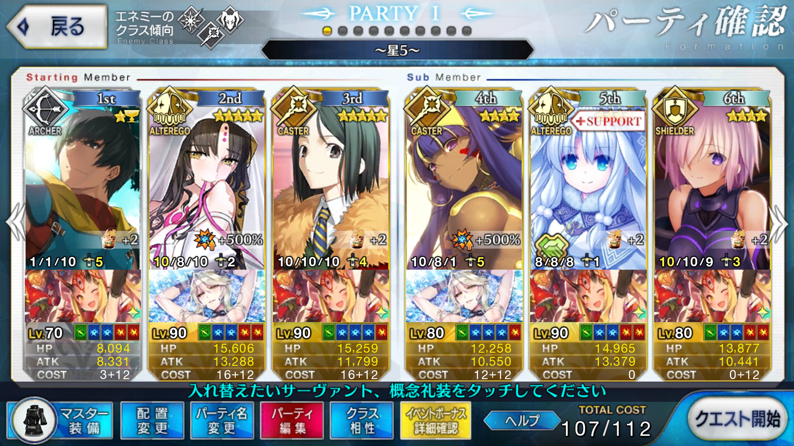
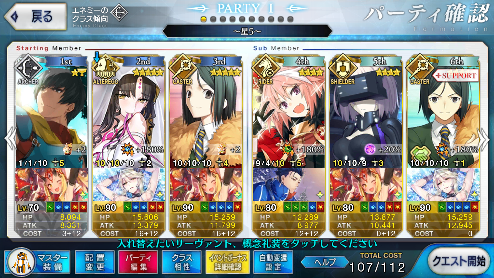

【FGO】神秘の国のＯＮＩＬＡＮＤ!! ～鬼の王とカムイの黄金～ 観覧車
この記事ではFGOイベントの周回を扱います。
編成画像にて最終再臨絵のネタバレがあるのでご注意を
基本方針
- 3T周回する
- 可能な限りドロップ追加礼装を搭載する
ドロップアイテム
- 英雄の証
- 蛮神の心臓
- 術の輝石
- 術の秘石
- コヅチサンデー
エネミー構成
- 高さに酔ったゴロツキ
- ゴロツキどものボス（2w）
- 絶景かな絶景かな（3w）
ゴロツキどものボスはデーモン
絶景かな絶景かなは北斎
天地人相性
相性有利の場合、与ダメージ+10％
相性不利の場合、与ダメージ-10％
| 敵 | 天地人 |
|---|---|
| 高さに酔ったゴロツキ | 人 |
| ゴロツキどものボス | 天 |
| 絶景かな絶景かな | 人 |
2wは人で、3wは地で攻めるとダメージが伸びやすい
編成例
特攻倍率500

開幕はアーラシュと孔明のスキル2つでNPを100にしてブッパする
ただし画像の構成でも火力が微妙に足りないことがあるので、適切に追撃したい
すべてアーラシュのカードだった場合は諦めて真ん中の敵だけ殴ってからブッパ
ドロップ追加礼装を諦めるなら相撲やエアリアル・ドライブで補える
2wはデーモンに対してキアラの千里眼（獣）を使い、伍停心観も使う
等倍のニトクリスで落とすには特攻倍率500でもこのデバフが必要になる
3wはキアラにマスター礼装のバフをかけてブッパするだけ
特攻倍率180

特攻倍率がまだ低い場合のパターン
ステラに加えて、オダチェンとフレ孔明が必要となり、高倍率よりは若干手間
開幕は相変わらずステラ＋殴り
2wはアストルフォで片付ける
ニトクリスと違い相性有利のため、宝具レベルが一定以上（3以上？）なら孔明と自前バフのみで突破可能
NP工面のため、オダチェンで入れ替えるのは孔明とフレ孔明
3wはキアラで。
周回用キャラ選別
アーラシュ
とにかくNPが足りないため、オーダーチェンジまたはアーラシュの存在はほぼ必須と言って良い
ニトクリス
NPを100ためて特攻礼装つきの大火力をぶっ放せる
2wを切り抜けるにはバフデバフによる支援が必須
アストルフォ
特攻倍率が低いうち（180％程度）でも、強化次第でトライアングラーをつければ2wを任せられる。
殺生院キアラ
NPを50チャージできる全体宝具アルターエゴ
隣に孔明がいればNP0から宝具ブッパまで行ける
フォーリナーに対して有利であり、500％ロイヤルアイシングがあればバフを多少サボっても十分に3wを抜けるだけの火力を出せる
葛飾北斎（フォーリナー）
人特攻があり、ロイヤルアイシングがあれば3wで戦える
自前のNPチャージはキアラよりも少ない30なので、NPの工面だけ気を使う必要はある